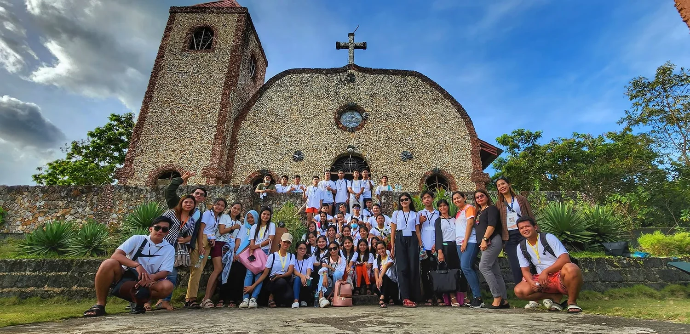
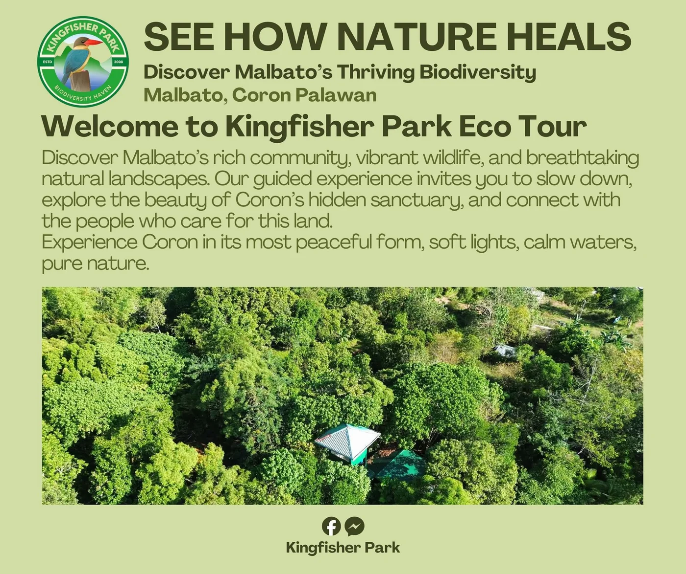
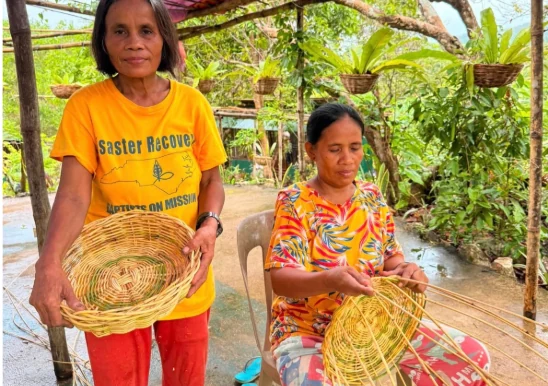
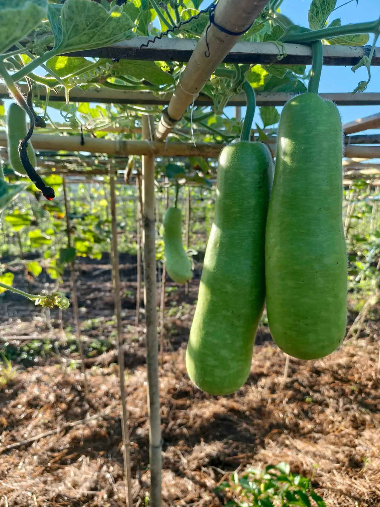
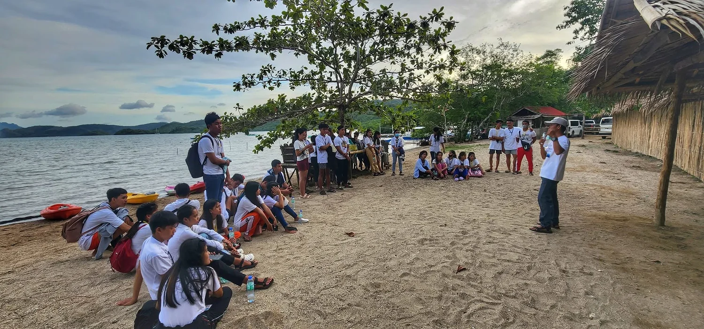

2010 ARCHIVE
EARLIER PARK
Photographs from an earlier chapter.
An earlier park photograph records a structure from before Typhoon Yolanda. It is presented here as historical material, not as a current facility.
From earlier park views to field workshops and more recent visitor experiences, these photographs show how people have engaged with the landscape through time.
An earlier park photograph records a structure from before Typhoon Yolanda. It is presented here as historical material, not as a current facility.

2022 ARCHIVEThe historical collection includes mobile workshops, school activities and biodiversity-related learning moments.

2026Current visitor activities and operating information are presented on the Experiences and Plan Your Visit pages. Historical photographs remain clearly identified in this archive.
Basket weaving, gardening and outdoor learning connect the park’s story to the lives and skills of the surrounding Malbato community. The photographs are identified by subject and year where available.


